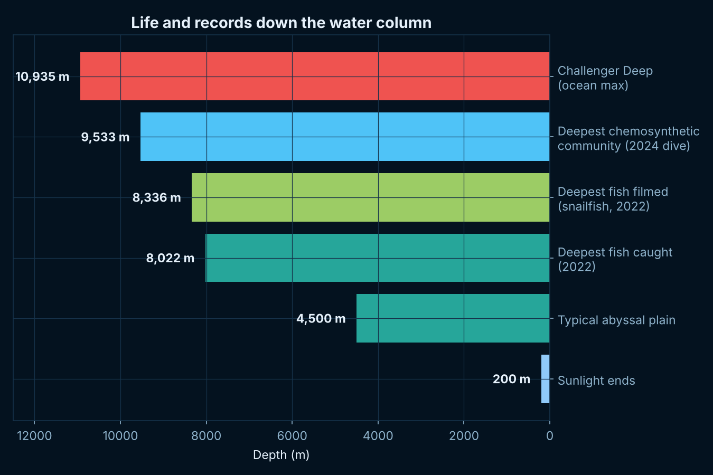

Encyclopedia catalogs
Species Atlas
1,003 ocean animals, plants and microbes from sunlit reefs and rivers to the hadal trenches. Each profile shows depth range, where it lives, diet, conservation status, a real photo and an overview, plus the sounds of whales, dolphins, seals, seabirds and noisy fish.
1003 entriesSeas & Oceans
All five oceans and 45 major seas, gulfs and bays. Each has geography, seafloor, currents, weather and cyclones, flora and fauna, ecosystems, history and shipwrecks, people and threats, and links to every species, river, wreck and article connected to it.
50 entriesRivers & Estuaries
The great rivers that feed the ocean: their course, seasonal flood cycles, flora and fauna, people and threats, linked to the seas they drain into and the species that live there.
36 entriesShipwrecks & Discoveries
Famous shipwrecks and lost-ship discoveries, from Bronze Age traders to the Titanic and Endurance: how they sank, how they were found and what science learned.
30 entriesOcean Phenomena
How the ocean works, explained: why ripples, waves, swell, rogue waves and tsunamis form, how tides, cyclones, storm surges, monsoons, El Niño, upwelling and the global conveyor work, and more.
31 entriesResearch Papers
Key peer-reviewed papers behind this encyclopedia. Read openly licensed ones here in the built-in PDF reader, download them, or open the publisher/arXiv PDF in a new tab.
22 entriesIn-depth articles by section
Ocean System
How the deep ocean works physically and chemically: zones, pressure, light, circulation and the carbon pump.
4 articlesDeep-Sea Life
How animals and microbes survive darkness, cold, crushing pressure and scarce food, and how fast we are discovering them.
6 articlesSeafloor & Habitats
The geology and habitats of the deep: trenches, vents, seeps, seamounts, abyssal plains, canyons, brine pools and nodule fields.
5 articlesExploration
From the Challenger expedition to full-ocean-depth submersibles: the history, tools and blind spots of deep-sea exploration.
4 articlesOcean & Climate
How a warming, acidifying, deoxygenating ocean changes the deep, with the latest measured data.
5 articlesImpacts & Governance
Deep-sea mining, bottom trawling, plastics, and the treaties and protected areas meant to manage them.
5 articlesResearch Library
Structured deep reads of the key papers, plus a reading list.
6 articlesData, Labs & Tracker
The live research tracker, interactive labs, figure gallery and the open datasets behind deep-ocean science.
4 articlesFeatured deep dives

Hadal Life: Living at the Bottom of the World
Trenches deeper than 6,000 m host snailfish, giant amphipods and, as of 2025, flourishing chemosynthetic communities at 9,533 m.

Chemosynthetic Ecosystems: Vents, Seeps and Whale Falls
Entire food webs powered not by sunlight but by chemical energy, discovered only in 1977 and still yielding new species and depth records.

A History of Deep-Sea Exploration
150 years from a sounding line on HMS Challenger to crewed full-ocean-depth submersibles, told through the milestones that changed what we know.

How Little We Have Seen
Only about 0.001% of the deep seafloor has ever been imaged, and almost all of it near three countries. Here is what that bias means.
Ocean Deoxygenation
The ocean has lost more than 2% of its oxygen since 1960, the volume of anoxic water has quadrupled, and oxygen minimum zones are growing.

Deep-Sea Mining: Science, Law and the 2026 State of Play
Nodules, crusts and vent sulfides; the ISA Mining Code that still is not finished; the US permit route; and the evidence each side cites.
About this encyclopedia#
Under Water Deep Research is a long-form, fully sourced reference on the deep ocean. The model is the big public science references that have run for decades: Smithsonian Ocean, NOAA Ocean Exploration, the Encyclopedia of Life and FishBase. Each takes a different approach, and this site combines them:
- Explainer articles like Smithsonian Ocean: every claim is footnoted and every article ends with its references.
- Species and place catalogs like FishBase and the Encyclopedia of Life: one page per animal, plant, microbe, sea and ocean, with habitat, feeding, hunting, mating, migration and behaviour.
- A live tracker like NOAA’s expedition logs: what changed this month in research and policy, on every page.
- A paper library with structured analyses of key studies, each readable as a PDF.
Where to start#
- New to the deep sea? Read Ocean zones, then Life in the dark.
- Want animals? Browse the Species Atlas and filter by group or depth.
- Want places? The Seas & Oceans catalog covers all five oceans and the major seas.
- Following the news? Open the tracker bar above, or read Deep-sea mining.
39 articles · 1172 catalog entries · ~14k words · 83 distinct sources · reviewed 2026-11-15